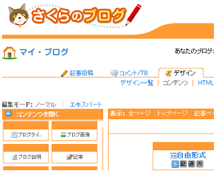
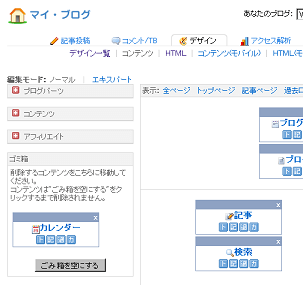
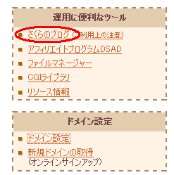
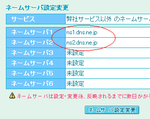
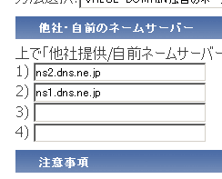

さくらのブログの作り方
さくらのブログというのは、レンタルサーバーで有名な「さくらインターネット」に付属しているブログ機能のことです。
このブログを利用するには、さくらインターネットのレンタルサーバーを利用しなくてはいけませんが、月額換算すると数百円程度です。
さくらのブログはシーサーブログと似ているので、Seesaaで使い慣れている場合は作り方がわりと簡単です。
さくらのブログの管理画面

シーサーブログの管理画面

さくらのブログを使う利点
- Seesaaのカスタマイズ方法をそのまま使える
- ブログの表示がある程度は軽め
- 有料なので広告非表示の気兼ねがない
- レンタルサーバーなのでホームページも作れる
- マルチドメインに対応している
さくらのブログのデメリット
- テーマや新着記事などのポータル的な機能がない
- www付きでの独自ドメインの設定ができない
- 独自ドメインのメールアドレスを設定できない
このブログでご紹介しているカスタマイズ方法は、主にシーサーブログのものが多いのですが、シーサーとさくらのブログは独自タグがほぼ同じなので、そのまま応用することができます。
シーサーブログでも独自ドメインでの運用は可能ですが、ブログが重いと感じる方は利用されてみてはいかがかと思います。
さくらのブログの作り方の簡単手順
さくらのブログの作り方ですが、まず、さくらのレンタルサーバでアカウントを取得します。
ライト～ビジネスプランまで、どのプランを選んでもさくらのブログ機能を使うことができます。
サーバーのコントロールパネルから、さくらのブログを選択し、サブドメイン名、ブログ名、ブログ説明などなどを入力します。

作り方自体はシーサーと同じです。
Seesaaブログの作り方記事を投稿してブログが完成です。
デフォルトでは「ほにゃらら.sblo.jp」というサブドメインになっています。
独自ドメインを使う場合も、まず、デフォルトのsblo.jpでブログを作成する必要があります。独自ドメインを設定したいときは「ドメイン設定」で新たにドメインを追加し、作成したブログへ割り当てればＯＫです。
この場合、www付きでは設定することができない仕様のようです。
（Seesaaでは可能）
さくらのブログでの独自ドメインの設定ですが、ムームードメインやバリュードメインなど、他社で取得した格安ドメインでもさくらのブログで利用することが可能です。
独自ドメイン設定方法としては、「ドメイン設定 - 新しいドメインの追加」と進み、ドメインの移管手続きの下に「非推奨」の追加方法というのがあるのでそこから設定します。
非推奨となっているので、おすすめというわけではないと思いますが、私はそれでやってます。
けっこうたちますが、今のところ何の不都合もないです。
そのままドメインを追加しても、「まず、ドメインのネームサーバーをさくらに向けてください。」というエラーが出てくるかと思います。
ムームーやバリュードメイン側で、ドメインのネームサーバーをさくらに変更してから追加するようにしましょう。


「ns1.dns.ne.jp」と「ns2.dns.ne.jp」で設定。
ネームサーバーを設定してからドメインを追加すると登録できるはずです。
この場合のタイムラグはほとんどありませんが、実際にドメインがネット上に反映されて使えるようになるまでは、多少の時間がかかる場合があります。
ちなみに、私が有料のさくらのブログを利用している理由は、Powered byのリンクを消して発リンクを抑え、SEO対策上のマイナス要因をすべて無くしたいからです。
無料のシーサーでこれをやると間違いなく規約違反となり、突然削除される可能性があります。
けれども、有料で利用している場合は、ＮＧの場合でも事前に何らかの連絡が来るはずと考えています。
この点がなければ、ポータル機能があり、www付きでの設定も可能な無料のSeesaaを利用する方がはるかにメリットが多いものと思います。
ロゴを消す方法は、htmlの編集欄で<% content_footer -%>を削除します。
<div id="footer">
<% content_footer -%>
</div>
加えて、フッターに表示したい内容をこの箇所に直接記入するとカスタマイズできます。
<div id="footer">
©2009 blog-tips.net
</div>
ただ、可否の詳細は不明ですので普通に使うことをおすすめします。
ロゴを消す場合でも、ブログをエクスポートしてバックアップを作成しておき、いつでも復元できる状態にしておきましょう。
- レンタルサーバーでＭＴブログの構築
ブログレンタルをする際は無料ブログサービスを利用する人が多いと思いますが、レンタルサーバーでのＭＴブログの構築もなかなかいいのではないかなと思います。無料ブログサービスでのブログ作成の場合は、記事を書... - 金ぴかブログの作り方
ブログの背景素材なんですけど、個別記事ページのヘッダー背景画像を金ぴかな感じにブログカスタマイズしてみました。オーラの泉の美輪さんがテレビで言ってたんですけど、色を金ぴかにしたら何ごとも事がうまく運ぶ...